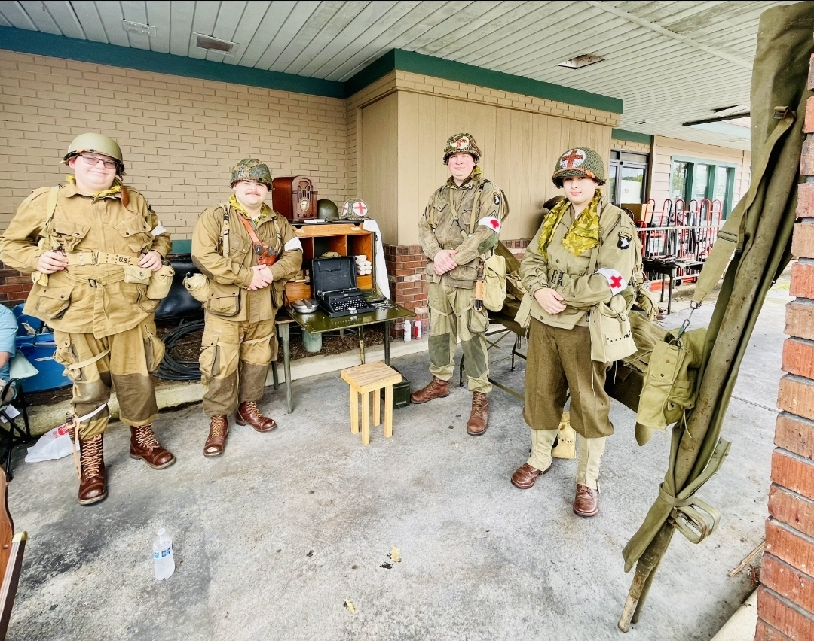
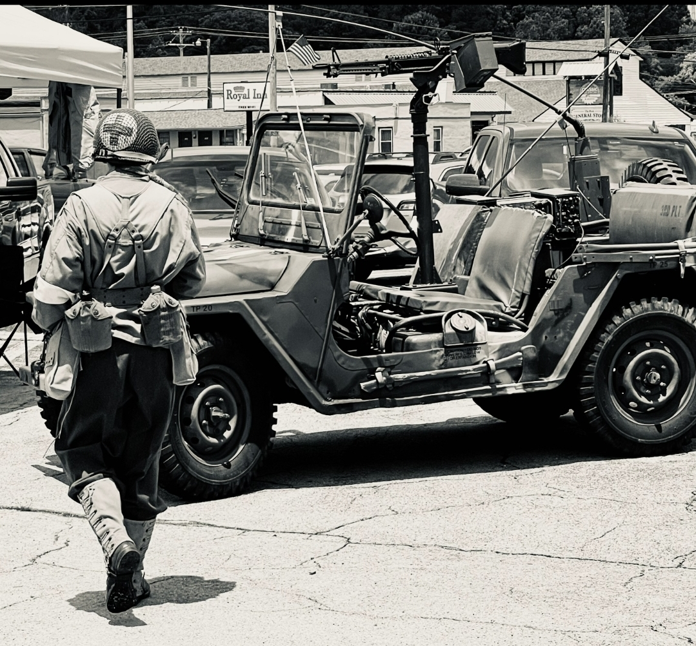
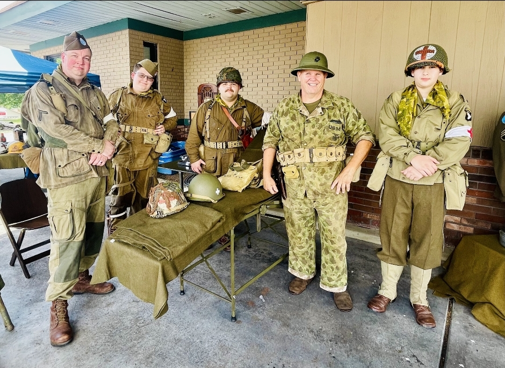
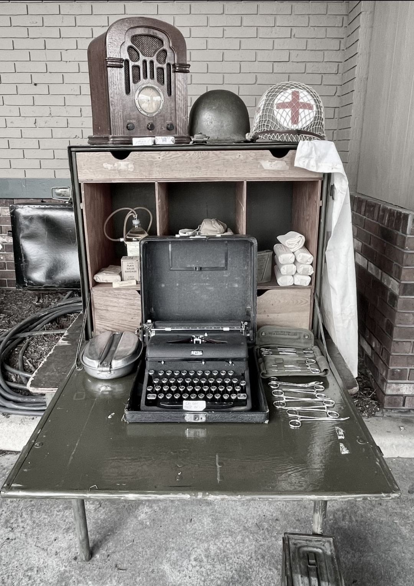
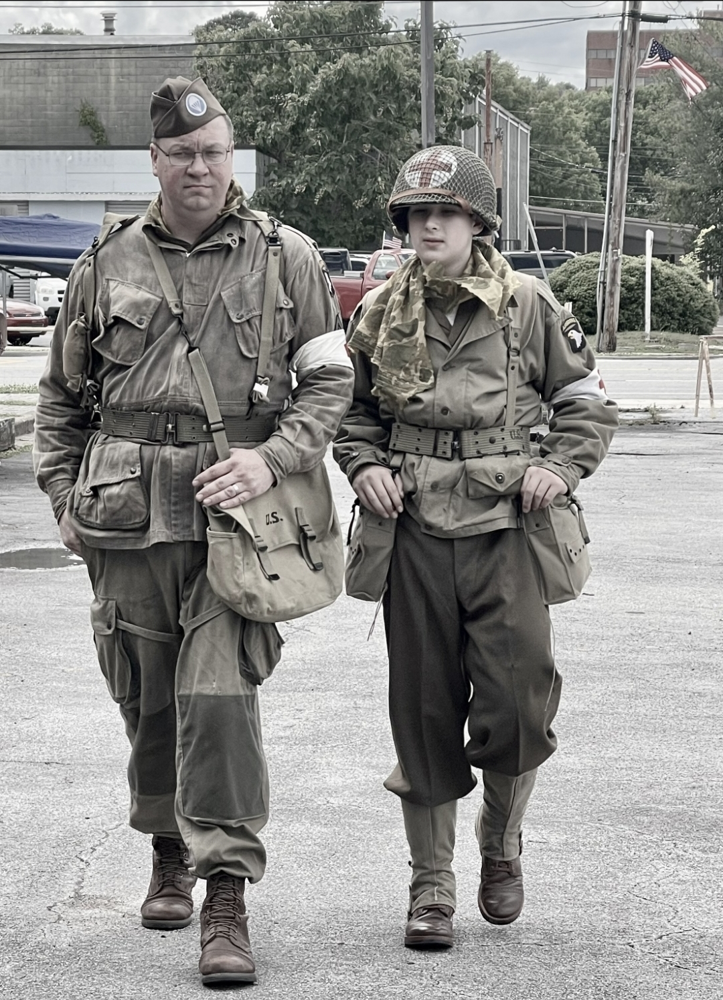
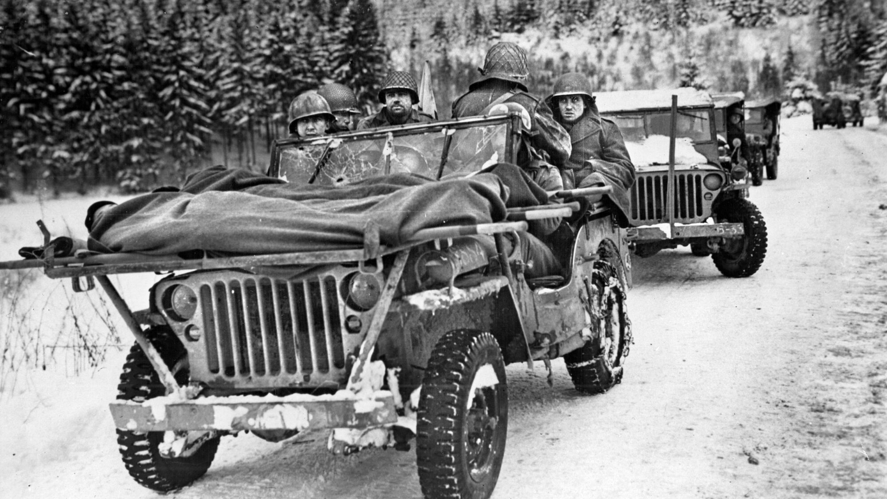
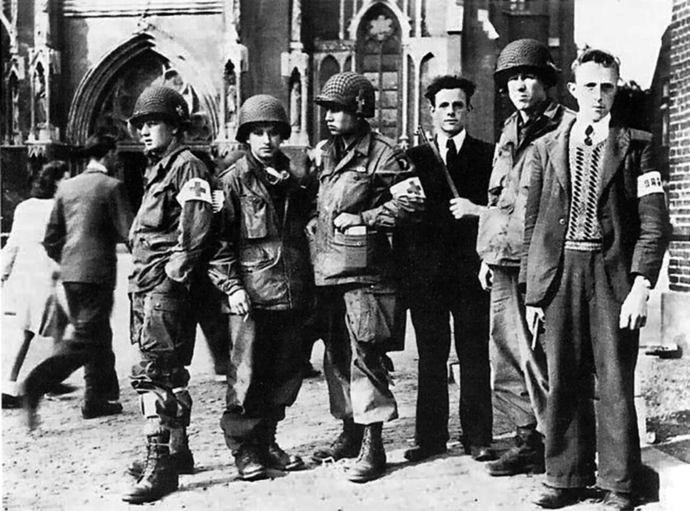
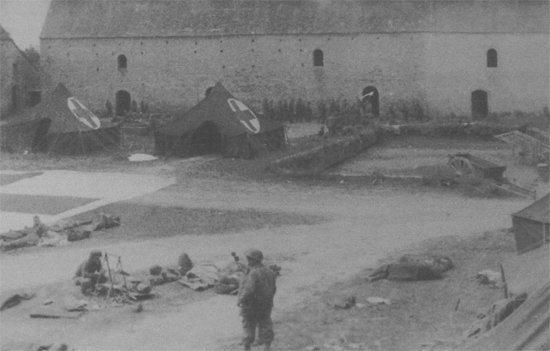
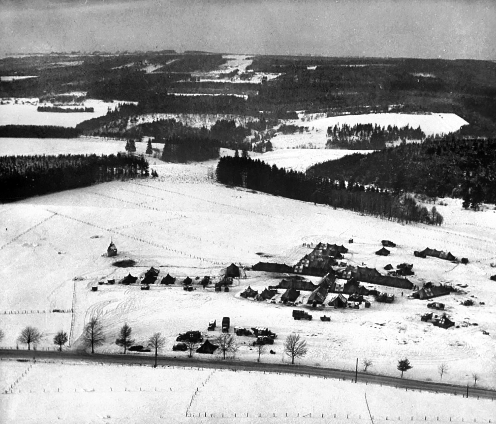

Gallery
Photos from our living history displays, reenactments, historical
research, and public events will be shared here as the unit continues
to grow.
Unit Events

326th AMC (Reenacted) Founding Members, Past in Review — Fort Oglethorpe, Georgia, May 23, 2026.

Past in Review Military Timeline 2026

326th AMC Members with event host and keynote speaker, Louis Varnell

Field Desk and Medical Equipment

Two founding members of the 326 AMC.
Historical Photographs

Jeeps were used as makeshift ambulances to carry wounded from the frontlines

Members of the 326th Airborne Medical Company during Operation Market Garden.

Aid station at Château Colombières near Hiesville, Normandy.

Clearing station at Sainte-Ode, 18 Dec 1944, the day before it was overrun.